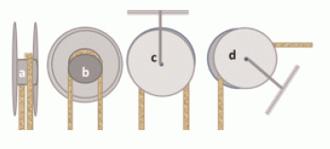
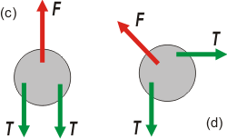

NO ME SALEN
PROBLEMAS RESUELTOS DE FÍSICA DEL CBC
(Leyes de Newton, vínculos)
|
|

|
| |
| FIS d17 - En las figuras (a), (b) y (c) se muestran distintas
vistas de una polea sujeta al techo y en la
(d), una polea sujeta a otra superficie.
Básicamente, una polea consta dos discos de
radio R unidos por un cilindro central de radio
r << R. Sobre el cilindro se apoya una soga ideal.
Suponiendo que las poleas de la figura tienen
masa despreciable: |
|  |
a) Realizar un diagrama de cuerpo libre para
las poleas de las configuraciones (c) y (d).
b) ¿Qué fuerza ejerce un eje, que pasa por el centro
de la polea, a través del cual se la puede sostener
ya sea del techo o sujetarla a una superficie? |
|
| Pavada atómica. Acá van los DCL de las poleas (c) y (d) |
|
|
 |
|
A la fuerza que hace la cuerda la dividí en dos tramos (uno a cada lado del eje), de igual módulo obviamente. La fuerza F es la que realiza el eje para soportar las tensiones de cada tramo de cuerda. En el caso (c) no cabe duda de que F = 2T. En el caso (d) F = 1,41 T. Qué... ¿ya te olvidaste de estática? |
|
|
| |
|
|
| DESAFIO: |
|
 |
| Algunos derechos reservados, otros no.
Se permite su reproducción citando la fuente. Última actualización mar-16. Buenos Aires, Argentina. |
|
|
|